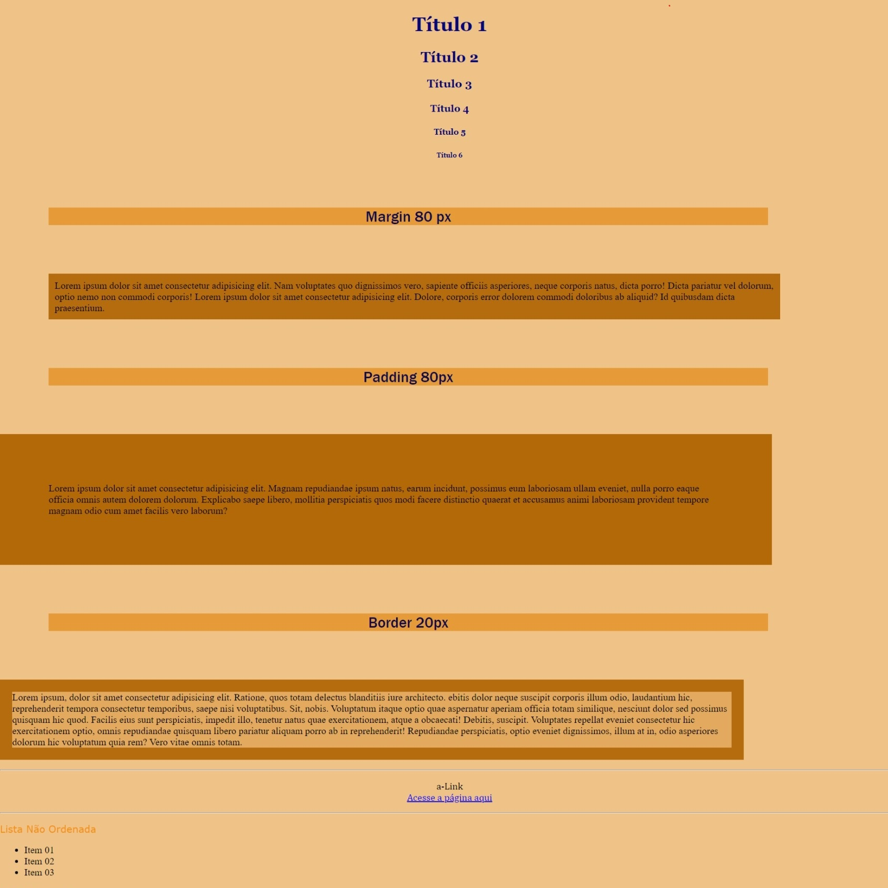

No meu primeiro projeto, pus em prática os fundamentos do HTML e CSS ao criar uma página. Adquiri conhecimento sobre a estrutura elementar do HTML, incluindo a organização de cabeçalhos e parágrafos, e explorei o CSS para adicionar estilo, abrindo caminho para minha jornada de construção e design na web.
Repositório Website